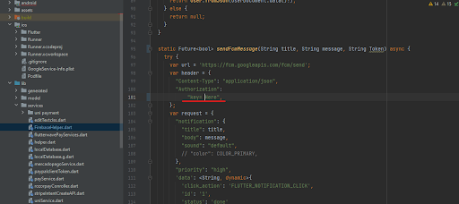
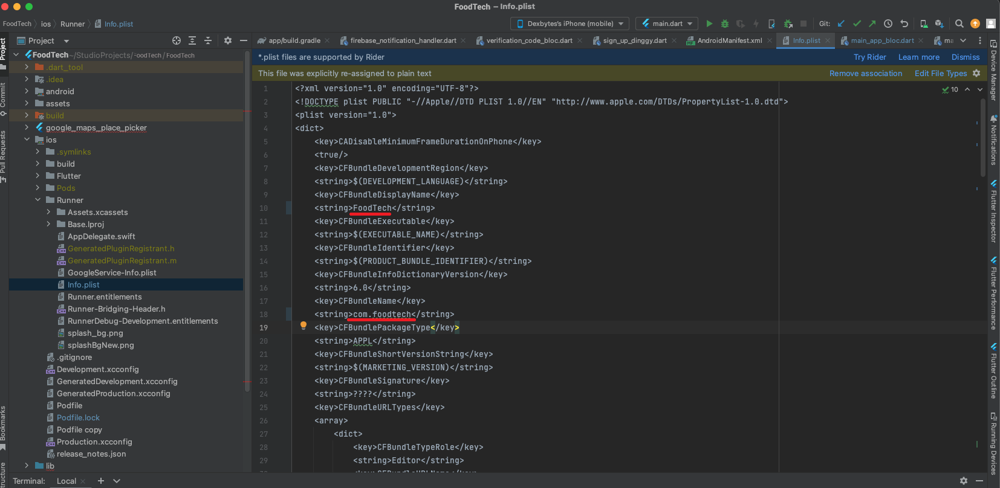

Introduction
FoodTech is a single solution for Multi Restaurant food delivery system developed using Flutter and Laravel Framework.
This product has three apps, APIs and Admin Panel which are Customer app, Restaurant app (Vendor/Provider), Driver app and Admin Dashboard. This documentation will be helpful in setting up FoodTech Admin Panel and mobile applications for iOS and Android.
Back-End Setup
The back-end of the Foodtech app is segregated into two main components: API services tailored for mobile application functionality and backend operations, and an Admin Panel responsible for overseeing and managing business activities via an administrative dashboard.
To achieve a precise setup, we initiate by configuring the 'foodtech_api' package. Afterward, we proceed to set up the 'foodtech_admin_panel' package by following the steps outlined below.
Environment pre requisites
- Laravel Version : 9
- PHP Version : 8.1
Part -I [FoodTech API]
Follow the below steps to install the FoodTech API package.
# Installation
- Please download `foodtech_api.zip` and extract the folders to the preferred location on the server.
- Create a MySQL database for the project - `food-example`
- From the projects root run `cp .env.example .env`
- Configure your `.env` file
- From the projects root folder run `composer update`
- From the projects root folder run `php artisan key:generate`
- From the projects root folder run `php artisan migrate:fresh --seed`
- From the projects root folder run `composer dump-autoload`
- From the projects root folder run `php artisan storage:link`
- From the projects root folder run `php artisan l5-swagger:generate` (https://github.com/DarkaOnLine/L5-Swagger)
- From the projects root folder run (local) `php artisan schedule:work` for server use supervisor
- From the projects root folder run (local) `php artisan schedule:work` for server use scheduling * * * * * cd /path-to-your-project && php artisan schedule:run >> /dev/null 2>&1
# Admin Panel
- The 'foodtech_api.zip' project should be installed after deploying the API code on your server or machine.
### Storage folder Ownership and Permission
- Check the permissions on the storage directory: `chmod -R 775 storage`
- Check the ownership of the storage directory: : `chown -R www-data:www-data storage`
### Seeds
##### Seeded Roles
- Unverified
- Cusotmer
- Admin
- Vendor(store)
- Driver
##### Seeded Users
- Access Type: Admin Access
- Email: admin@admin.com
- Password: admin123
## Remove public from url
<IfModule mod_rewrite.c>
RewriteEngine On
RewriteRule ^(.*)$ public/$1 [L]
</IfModule>
## Cron Jobs
- Send scheduled push notification `Push\NotificationController@sendScheduledPushNotification`.
- Send scheduled order Notification `Orders\OrderController@updateOrderSchedule`.
- Send remainder if order not accept from store `Orders\OrderController@updateOrderReminder`.
## Queue Jobs
- Send new order notification to drivers `SendOrderToDriver`.
- Cancel Order if store not accept order `CancelOrderToSystem`.
- If sharing payment not complete,them cancelled order `PartialPaymentOrderCancel`.
- Send notification for pending payment `PendingPaymentNotification`.
- Refund payment when order rejected from store `RejectedOrderRefund`.
Part -II [FoodTech Admin Panel]
Follow the below steps to install the FoodTech Admin Panel package.
# Installation
## Step 1
- Project `foodtech_api` should be pre-installed in your server or machine
## Step 2
- Please download `foodtech_admin_panel.zip` and extract the folders to the preferred location on the server and Follow the below mentioned commands to access the food-admin-panel.
- From the projects root run `cp .env.example .env`
- Configure your `.env` file
- Use a same api database (`foodtech_api.zip`) for the project (`foodtech_admin_panel.zip`) both of the projects are connected with the same database
- From the projects root folder run `composer update`
- From the projects root folder run `php artisan key:generate`
- From the projects root folder run `php artisan db:seed`
- From the projects root folder run `composer dump-autoload`
- From the projects root folder run `php artisan storage:link`
- From the projects root folder run (local) `php artisan schedule:work` for server use supervisor
- From the projects root folder run (local) `php artisan schedule:work` for server use scheduling * * * * * cd /path-to-your-project && php artisan schedule:run >> /dev/null 2>&1
### Storage folder Ownership and Permission
- Check the permissions on the storage directory: `chmod -R 775 storage`
- Check the ownership of the storage directory: : `chown -R www-data:www-data storage`
### Seeds
##### Seeded Roles
- Unverified
- Cusotmer
- Admin
- Vendor(store)
- Driver
##### Seeded Users
- Access Type: Admin Access
- Email: admin@admin.com
- Password: admin123
## Remove public from url
<IfModule mod_rewrite.c>
RewriteEngine On
RewriteRule ^(.*)$ public/$1 [L]
</IfModule>
Project Requirement & Configuration
- SMS– We are currently using Twilio and Unifonic to enable the SMS service.
- Push Notification– We use the Firebase service to enable push notifications. To activate push notifications, we need to edit the server key in the code.
- Navigation– We use the Google Maps service to enable navigation. To activate it, you need to generate and replace the key.
- File storage- You can save the file using either your device's local storage or Amazon S3 storage.
- Database– Our system works with two databases: MySQL and PostgreSQL.
- Mail– For email support, you can integrate various third-party services with our system.
- API Testing– To document and test the APIs, you can use Swagger version 2.0
- Notifications on Slack- To enable system notifications on Slack, you need to replace the 'LOG_SLACK_WEBHOOK' in the .env file.
- To set the default location in the platform, you need to update your location in the .env file by replacing the longitude and latitude
Common Server Setup
- Prepare the Server- Choose a server provider (e.g., AWS, DigitalOcean, Linode) and set up a virtual private server (VPS) or cloud instance. Access the server through SSH using the provided credentials.
- Upload the .zip File- Upload the foodtech_api or foodtech_admin_panel project's .zip file to the server using a tool like SCP (Secure Copy Protocol) or SFTP (SSH File Transfer Protocol).
- Extract the .zip File- Navigate to the directory where you uploaded the .zip file and extract it using the unzip command.
Copy code: unzip project.zip -d /path/to/destination - Install Necessary Software- Install necessary software such as PHP, Composer, MySQL (or any other database of your choice), and a web server (e.g., Apache or Nginx).
- Configure PHP- Configure PHP settings based on Laravel's requirements. Adjust PHP configuration files (e.g., php.ini) to set the appropriate values for memory limits, file uploads, etc.
- Install Composer- Install Composer, a dependency manager for PHP, on the server. Follow the official installation instructions for your operating system.
- Configure Environment Variables- Create a .env file in the project root and configure the necessary environment variables (e.g., database credentials, app key) for your Laravel application.
- Generate Application KeyGenerate Application Key- Run the php artisan key:generate command to generate the application key for Laravel.
- Migrate the Database- Run the necessary database migrations to set up the database schema using the php artisan migrate command.
- Optimize Configuration- Optimize the application's configuration using the php artisan config:cache command.
- Set Up Web Server- Configure the web server (e.g., Apache or Nginx) to point to the public directory of your Laravel project.
- Restart Web Server- Restart the web server to apply the configuration changes.
- Verify Deployment- Access your Laravel API using the server's IP address or domain name and test the functionality to ensure the deployment was successful.
Environment Setup for Flutter
Setting up
In this module, we are going to outline how to configure your Flutter development.
Install Basic Flutter Development Tools
View the Flutter Installation Guide to know about basic flutter development.
Android
Configure Flutter Development for Android
To prepare Flutter for Android development, you should install Dart, Flutter, optionally Visual Studio Code, and Android Studio, then follow these straightforward steps
- Install & Configure with Flutter Installation Guide
- Download & Install Visual Studio Code
- Download & Install Android Studio (recommended)
iOS
Configure Flutter Development for iOS
Install Cocoapods, Xcode (Make sure to check the latest version of Xcode).
Setting up Project
Download the zip files containing the applications and extract them to your desired location. Open the project using Visual Studio, Android Studio, or Xcode
Link Firebase account & Push Notifications
Firebase Integration
a) Create a Firebase Account
First Create a Firebase account and then access to your own Firebase Console. One Firebase account has the capability to accommodate multiple Firebase Projects, each of which can in turn host multiple mobile apps.
b) Configure a Firebase Project
Generate a Firebase mobile app project for each app you planning to release. If you plan to publish your app on both iOS and Android platforms, you must create different Firebase apps, as they are technically considered separate applications.
If you wish your Flutter app to be compatible with both iOS and Android, you should create distinct mobile apps for each platform within Firebase. To do this, simply click the 'Add App' button.
Once you've chosen the platform (iOS or Android), you'll be required to provide the app's identifier. Depending on the Flutter template you've buy, you need to locate the appropriate identifier within the downloaded files package.
for Android, go to android/app/build.gradle and get the applicationId
for iOS, open the app using Xcode and find the Bundle ID field in the project's settings.
Once you have the bundle ID, just use it in Firebase, add your sha1 or sha256 key (For Mobile verification) and create the app.
Note:
Prior to sending your app for review on the App Store or Google Play, it's essential to modify these bundle identifiers with your distinctive ones. This adjustment is necessary as both app stores prohibit the use of duplicate application IDs.
c) Enable Firebase Authentication
To setup Firebase Authentication, go to Firebase Console -> Authentication -> Sign-in Methods and a the methods that you are going to support in your app.
d) Enable Firebase Firestore
To allow the mobile app to read and write data to/from Firebase Firestore, set up the correct access permissions.just head over to Database -> Cloud Firestore and set the Rules for writes and reads to the public.
service cloud.firestore
{match/databases/}database},/documents {match/{document=**}, {allow read, write: if true;}, }, }
e) Enable Firebase Storage
If your mobile app needs access to Firebase Storage (e.g. for uploading photos and videos, for instance), you have to enable Firebase Storage, so that the functionality works properly. To enable it, just go to Storage in the left menu.
service cloud.firestore
{service firebase.storage {match /b/{bucket}/o {match /{allPaths=**} {allow read, write: if request.auth != null; } } }
f) Link Firebase Account to Your Mobile App
After creating your app, Firebase will generate a configuration file with a specific name (for Android, it's "google-service.json," and for iOS, it's "GoogleService-Info.plist"). You need to incorporate this file into your Flutter app for it to connect with your custom Firebase backend. To achieve this, simply download the configuration file and replace the existing placeholder files with it:
iOS: Download the GoogleService-Info-plist file and override the
existing ios/NameOfApp/GoogleService-Info.plist file.
Android: Download the google-service.json file and replace the
existing android/app/google-service.json file.
Update those files in all three apps as mentioned.
If you've previously set up an app in Firebase, you can locate and download the configuration file within the Firebase Console by navigating to "Project Settings."
Run your freshly created Flutter template, and your mobile app will utilize your custom Firebase backend, rather than the default setup. Ensure that you've added all the necessary tables and data to your Firebase database so that the app has content to display, such as food categories, chat messages, and more. To promptly evaluate the Flutter-Firebase integration, consider registering a new user and verifying their presence in the Firebase Authentication tab.
g) Enable SMS Phone Authentication
To enable SMS authentication through Firebase, there are specific configurations that need to be set up, enabling the app to send SMS messages to users.
Enable Phone Authentication within Firebase by navigating to Authentication > Sign-in method > Phone Authentication, and then toggle the Enable switch.
Push Notifications
This application utilizes Google Cloud Messaging, integrated within Firebase, for the purpose of delivering push notifications to both iOS and Android devices.
Push notifications are set up to work with our staging Firebase project by default in all of our Flutter templates. To use them with your own project, you need to switch the configuration. This is similar to how you switched the configuration for Firestore.
Setting Up Your Own Firebase for Push Notifications
To configure them with your own Firebase account, simply replace the Server Key in the lib/constants.dart file with your own.
a) In Firebase, go to Project Settings -> Cloud Messaging and copy the Server Key to clipboard
If your Cloud Messaging API is not enabled yet first you need to enable it to get the server key please follow the following steps to enable the Cloud Messaging
1) Click on the three dots on the right side of the Cloud Messaging API section.
2) After click on three dots you can able to see the link text to go to Google Cloud Console there you need to hit the Enable button then come back to Firebase tab in the browser and refresh the page.
3) After refreshing the page you can able to see the Sever Key.
b) Within the source code, navigate to lib/constants.dart and replace the Server Key (identified as the SERVER_KEY constant) with your unique one:
const SERVER_KEY = “YOUR_UNIQUE_SERVER_KEY”;
c) also place the key in file named FirebaseHelper.dart where sendFcmMessage method placed in that method replace text Enter Your Fcm Key with your own.

Code Documentation
sendNotification(String token, String title, String body) async {}
sendFcmMessage(String title, String message, String Token)
To identify all the places that trigger push notifications, simply search for this method in the project.
Setup with firebase
1. Setup with firebase using flutterFire
Follow this link to setup with firebase :- https://firebase.google.com/docs/flutter/setup?platform=ios
3. Setup manually
A) For android
i) Enter package name
ii) Download google-services.json file
iii) Place google-services.json file in /android/app/
B) For IOS.
i) Enter package name
ii) Enter package name and download GoogleService-Info.plist
iii) Place GoogleService-Info.plist in /iOS/
Mobile App Customization
Application Changes
Change App Name (Repeat these identical steps for all three applications: customer, driver, and restaurant.)
Android
# Change the value of android:label="AppName" under .xml file
/android/app/src/main/AndroidManifest.xml
# Change the value of applicationId "com.appname" under .xml file
/android/app/src/build.gradle
iOS
# Change the value of [CFBundleName] CFBundleDisplayName & CFBundleName under Info.plist
/iOS/Runner/Info.plist

Replace Map key
1. Android
/android/app/src/main/AndroidManifest.xml
2. IOS
/ios/Runner/AppDelegate.swift
Support
We're delighted to assist you with our services and support. Feel free to reach out to our dedicated support team
Head of Customer Support : Akash Verma
Skype: Akash Verma
In order to assist our customers effectively, we maintain open communication with each customer who requires assistance with our product. Our dedicated customer support team is available Monday to Friday, from 11:00 AM to 7:00 PM IST (GMT +5.30). We are based in India, located in the Asia.
Usually, we respond to our customers' questions and inquiries within a 24-hour period through comments, the support forum, or emails.
Contact Us
Visit Us : www.dexbytes.com
Email : support@dexbytes.com
Call & WhatsApp : +91 7880111724
Thank You..!